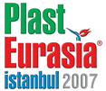
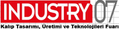

|
05 - 09 Aralýk 2007 > Plast Eurasia Ýstanbul 2007 17. Uluslarararasý Ýstanbul Plastik Endüstrisi Fuarý:
(PAGEV Türk Plastik Sanayicileri, Araþtýrma, Geliþtirme ve Eðitim Vakfý iþbirliðiyle hazýrlanmaktadýr)
Yer: Tüyap Fuar ve Kongre Merkezi, Beylikdüzü
Salon: 2-3-5-6-7-8-9
Ziyaret Saatleri: 5-6-7-8 Aralýk 10:00-19:00, 9 Aralýk 10:00-18
Ürünler:
- Plastik Makine ve Malzemeleri
- Kalýp
- Plastik Ürünler
- Hammadde
- Plastik Ambalaj Teknolojisi
- Hidrolik ve Pnömatik
Daha
fazla bilgi için: www.plasteurasia.com
 22 - 25 Kasým 2007 > Endüstri Fuarý - EF 2007: 22 - 25 Kasým 2007 > Endüstri Fuarý - EF 2007:
Yer: CNR Expo Ýstanbul
Ziyaret Saatleri:
22-24 Kasým > 09:00 - 19:00
25 Kasým > 09:00 - 18:00
EF Endüstri Fuarý, 30.000 m2 kapalý fuar alaný, yaklaþýk 300 katýlýmcýsýyla, bir CNR Holding kuruluþu olan Sine Fuarcýlýk A.Þ. organizasyonu, MÝB - Makine Ýmalatçýlarý Birliði ve OAÝB - Orta Anadolu Ýhracatçý Birlikleri, Alternatif Yayýncýlýk destekleri ile düzenleniyor.
Baþlýca Katýlýmcý Ürün Gruplarý:
TAKIM TEZGAHLARI
. CNC iþleme merkezleri, freze, torna tezgahlarý
. CNC tel ve dalma erezyon
. CNC pres ve zýmbalý deliciler
. CNC nokta kaynak makineleriý
. CNC azdýrma , raspalama, diþli açma , planyalama tezgahlarý
. 3D koordinat ölçme makineleri ve kontrol tezgahlarý
. Taþlama tezgahlarý
. Alet bileme tezgahlarý
. Testere tezgahlarý
. Montaj sistemleri
. Kaplama tezgahlarý
. Lazer kesme tezgahlarý
. Sývama tezgahlarý
. Alevle kesme makineleri
. Takým tezgahlarý kesici uçlarý ve aksesuarlarý
. Kalýp tutucular
|
METAL ÝÞLEME MAKÝNALARI
. Sac iþleme ve pres makineleri
. Döküm , haddeleme makineleri
. Giyotin makaslarý
. Tel ve profil çekme , boru bükme makineleri
. Dövme , ekstrüzyon makineleri
. Metal enjeksiyon makineleri
. Isýl Ýþlem Makinalarý
YAZILIM ve TASARIM MÜHENDÝSLÝÐÝ
. CAD/CAM/CAE
. Dijital üretim
. Endüstriyel tasarým
. 3 boyutlu optik tarama ve sayýsallaþtýrma
. Mekanik tasarým
. Sanal prototipleme
. Hýzlý prototipleme
. Hýzlý kalýpçýlýk
. Mühendislik, analiz ve test |
HÝDROLÝK & PNOMATÝK
. Hidrolik&Pnömatik pompalar
..
ENDÜSTRÝYEL OTOMASYON
. Üretim bandlarý ve proses otomasyonu
...
ENDÜSTRÝYEL EL ALETLERÝ
. Havalý, elektrikli ve akülü el aletleri
. Dijital ölçüm aletleri
...
YÜZEY ÝÞLEMLER
. Taþlama , kumlama ,bileme ve honlama makineleri
. Kaplama teknolojileri
. Yüzey koruma iþlemleri
... |
Panel ve Konferans Programý:
22 Kasým 2007 - Perþembe
13:00-15:00 Panel: Türkiye'nin Robot Nüfusu Neden ve Nasýl Arttýrýlmalý?, Moderatör: Prof. Dr. Adil Baykasoðlu
15:15-16:00 Yalýn Üretimin Uygulanmasý, Yaman Angay
16:15-17:00 Kalite Yönetiminde Ýleri Teknikler, Bülent Cerit
17:15-18:00 Radyo Dalgalarýný Kâra Dönüþtürmek: RFID Sistemleri Melda, Bilal Göknel
23 Kasým 2007 - Cuma
14:15-15:45 Panel: Bir Üretim Yönetim Sitemi Olarak KANBAN, Moderatör: Prof. Dr. Bülent Durmuþoðlu
16:00-16:45 Daha Ýyi Ürün Nasýl Tasarýmlanabilir?, Ýlker Uludað
17:00-17:45 Konveyör Seçiminde Dikkat Edilmesi Zorunlu Hususlar, Yaman Angay
24 Kasým 2007 - Cumartesi
13:00-15:00 Panel: Mekatronik Mühendisliðinin Önlenemeyen Yükseliþi ve Türkiye Uygulamalarý, Moderatör: Dr. Hayrettin Karcý
15:15-16:00 Makinelerde Görme Sistemleri, Aytül Erçil
16:15-17:00 Proses Endüstrisinde Enstrüman Seçimi, Lütfü Bilgen
17:15-18:00 CAD/CAM Sistemlerinde Son Geliþmeler, Barýþ Kuldaþlý
25 Kasým 2007 - Pazar
14:15-15:00 Ýmalat Yönetiminde Nirvana: Yalýn Altý Sigma, Halefþan Sümen
15:15-16:00 Otomasyon Yatýrým Projelerinin Yönetimi, Metin Çelenk
16:15-17:00 Otomasyon Sistemlerinin Yenilenmesi, Metin Çelenk
Daha
fazla bilgi için: www.endustrifuari.com
Not: TurkCADCAM.net EF 2007 Fuarý'ný destekleyen yayýnlar arasýnda yer almaktadýr;
TurkCADCAM.net (Sinerji Yayýncýlýk) standý: 2. Hall 2-A16
08 - 11 Kasým 2007 > KALIP 2007 3. Ýstanbul Kalýp
Fuarý:
Yer: Ýstanbul Fuar Merkezi
Fuar sonrasýnda yayýnlanan haberi görmek için týklayýnýz
(88 firmaya ait yüksek çözünürlüklü stand fotoðrafý...) |
 Alanýnda ülkemizin ilk ve tek fuarý olarak 2005 senesinde düzenlenen Ýstanbul Kalýp Fuarý, sektörden gördüðü yoðun ilgi ve talep ile yoluna ikinci sene güçlenerek devam etti. Ýkinci senesi, 2006'da, hol sayýsýný ikiye katlamayý baþaran fuarýn, ziyaretçi profilinde de artýþ gözlemlendi. Geçtiðimiz yýllarda, ana ve yan sanayiler ile kalýp üreticilerini buluþturmayý baþaran Ýstanbul Kalýp Fuarý, bu sene sunacaðý yepyeni projeler ile sektörün vizyonunu geniþletmeyi hedefliyor. Alanýnda ülkemizin ilk ve tek fuarý olarak 2005 senesinde düzenlenen Ýstanbul Kalýp Fuarý, sektörden gördüðü yoðun ilgi ve talep ile yoluna ikinci sene güçlenerek devam etti. Ýkinci senesi, 2006'da, hol sayýsýný ikiye katlamayý baþaran fuarýn, ziyaretçi profilinde de artýþ gözlemlendi. Geçtiðimiz yýllarda, ana ve yan sanayiler ile kalýp üreticilerini buluþturmayý baþaran Ýstanbul Kalýp Fuarý, bu sene sunacaðý yepyeni projeler ile sektörün vizyonunu geniþletmeyi hedefliyor.
2005 senesinde ihtisas fuarýna kavuþan ve gerçek bir ticari platformda hedef kitlesi ile buluþan kalýpçýlýk sektörü, ekonomiyi güçlendiren ve ekonominin gösterdiði geliþimi gözler önüne seren sektörlerin en baþýnda geliyor.
Hem yerli hem yabancý ziyaretçisi ile sektörlerin kucaklaþmasýna ev sahipliði yapan Ýstanbul Kalýp Fuarý, üçüncü senesinde de kalitesi ile dünya ülkelerini zorlayan Türk kalýp sektörünün önünü açmaya hazýrlanýyor.
Fuarda ürün ve hizmetlerini ziyaretçilerle paylaþacak Katýlýmcý Ürün Gruplarý ise þu þekilde:
Kesme Kalýplar, Friksiyon Kalýplar, Pres Kalýplar, Metal Enjeksiyon Kalýplarý, Termoform Kalýplar, Sývama Kalýplar, Plastik Kalýplar, Þiþirme Kalýplar, Model Kalýplar, Kauçuk Enjeksiyon Kalýplar, EPS Kalýplar, Sac Metal Kalýplar, Döküm Kalýplar, Dövme Kalýplar, Cam Kalýplar, CAD-CAM Sistemler, Kalýp Parlatýcýlarý, Mühendislik-Danýþmanlýk, Ek Parçalar ve Diðer. Ayrýca kalýp imalatýnda kullanýlan tüm Makineler, Tezgahlar, Kimyasallar, Hammaddeler, Bilgisayar ve Programlarý, Baðlantý Elemanlarý, Takým Tutucular, Sistemler, Elemanlar ve Malzemeler.
Türkiye'nin en güçlü kurumlarýndan deðerli konuþmacýlarýn sunum yaptýðý sempozyum ve firma konferanslarý, geçen senelerde ziyaretçi ve katýlýmcýlardan ilgi görmüþtü. Ýstanbul Kalýp Fuarý, üçüncü senesinde de, sektöre bilgi akýþý gerçekleþtirmeyi sürdürecek. Sempozyum ve firma konferanslarýnýn yaný sýra eðlenceli etkinlikler de Fuar'ý süsleyecek.
Dünyanýn en iyi kalýp üreticileri arasýnda yer alan Türkiye, katýlýmcý firmalarýn yaný sýra ziyaretçi anlamýnda da yoðun þekilde yabancý aðýrlayacak. Hem Türk kalýpçýlýk sektörünün geldiði noktayý görmek isteyen yabancý kalýpçýlarýn hem de ana ve yan sanayi mensubu yabancýlarýn ziyaret etmesi beklenen Ýstanbul Kalýp Fuarý, dünyayý buluþturan gerçek bir ticari platform olacak...
Panel programý:
2010'a Doðru Beyaz Eþya Sektörü ve Kalýp
09 Kasým Cuma, 13:00
Pamukkale Konferans Salonu
BSH (Bosch Siemens Profilo) Ev Aletleri Kalýphane Müdürü Hanifi Ýçtüzer, Alarko Carrier Kalýp Aparat Müdürü Orhan Zorlu, Termikel A.Þ. Üretim-Planlama Müdürü Hasan Ataç ve Fanset Elektrikli Ev Aletleri A.Þ. Kalýphane Müdürü Resul Kara'nýn katýlýmlarýyla gerçekleþtirilecek olan Panel'in baþkanlýðýný Ýstanbul Üniversitesi'nden Prof. Dr. Þerafettin Eroðlu yapacak.
2010'a Doðru Otomotiv Sektörü ve Kalýp
10 Kasým Cumartesi, 13:00
Pamukkale Konferans Salonu
Tofaþ Otomotiv Kalýp Üretim Yöneticisi Gökhan Iþýkman, Ford Otosan CAD/CAM Proje Koordinatörü Yýlmaz Çoruh, Farplas Oto Yedek Parçalarý Kalýphane Yöneticisi Ali Bayatfard, CMS Jant ve Makine A.Þ. Kalýphane Yöneticisi Aybars Güngüler'in katýlýmlarýyla gerçekleþtirilecek olan Panel'in baþkanlýðýný Yýldýz Teknik Üniversitesi'nden Doç. Dr. Ahmet Karaaslan yapacak.
Katýlýmcý firmalar ve stand krokileri:
|
|
9. Salon / Hall |
10. Salon / Hall |
Daha büyük görmek için krokilerin üzerini týklayýnýz
TurkCADCAM.net (Sinerji Yayýncýlýk) standý: 9. Salon E209
Daha
fazla bilgi için: www.kalipfuari.com
Not: TurkCADCAM.net, CADCAMkariyer.net ve e-imalat.com 3. Ýstanbul Kalýp Fuarý'ný destekleyen yayýnlar arasýnda yer almaktadýr.
18 - 21 Ekim 2007 > TIME 2007, 4. Uluslararasý Üretim Teknolojileri Fuarý:
Yer: CNR EXPO Ýstanbul
Ziyaret saatleri: 10:00 - 19:00
Ýlki 2001 yýlýnda gerçekleþtirilen, TATEF Uluslararasý Metal Ýþlem ve Teknolojileri Fuarý ile dönüþümlü olarak her iki yýlda bir düzenlenen TIME - Uluslararasý Üretim Teknolojileri Fuarý, Türkiye'nin makine ve teknoloji üretiminde ulaþtýðý düzeyin dünyaya sergilendiði, hedef kitleye teknolojinin uygulamalý tanýtýmlarýnýn gerçekleþtirildiði dev bir organizasyondur.
Dünyanýn önemli alýcýlarýnýn buluþma noktasý olarak ziyaretçilerine kaçýrýlmayacak fýrsatlar sunacak olan TIME 2007'de, sektördeki ileri üretim teknoloji ürün ve hizmetleri sergilenecektir.
25.000'nin üzerinde profesyonel ziyaretçi, 250'nin üzerinde katýlýmcý firma temsilcisiyle sektördeki en yeni ve teknolojik ürünlerin sergileneceði etkin bir ticari platformda, verimli iþ ortaklýklarý kurma fýrsatý bulacaklardýr.
Fuardaki
bazý ürün gruplarý:
- CAD/CAM
Sistemleri, Yazýlýmlar
- Tasarým
Mühendisliði, CNC
Takým Tezgahlarý, Takýmlama
- Otomasyon,
Hidrolik-Pnömatik Sistemler
- Metal
Kalýp Döküm Ürün ve Teknolojileri, Soðuk
Þekillendirme ve Döküm Kalýplarý
- Yüzey
Ýþlem, Boyama Mak. Ekipmanlarý, Kaynak
Makine ve Ekipmanlarý
Daha
fazla bilgi için: www.itf-time.com
Not: TIME 2007 ardýndan yayýnlanan haber ve birçok katýlýmcý firmaya ait yüksek çözünürlüklü stand fotoðraflarý için týklayýnýz
24 - 27 Mayýs 2007 > BURSA KALIP 2007 > Bursa Kalýp Teknolojileri
ve Yan Sanayi Fuarý:
Yer: Tüyap Bursa Uluslararasý Fuar ve Kongre Merkezi
Bu fuar, TÜYAP Bursa Fuarcýlýk A.Þ. ve Prestij Yayýncýlýk tarafýndan Uluslararasý Kalýp Üreticileri Birliði, TAYSAD Taþýt Araçlarý Yan Sanayicileri Derneði, Bursa Büyükþehir Belediyesi ve Bursa Ticaret ve Sanayi Odasý desteði ile hazýrlanmaktadýr.
Geçtiðimiz sene ilki düzenlenen Bursa Kalýp 2006 ve Bursa Otomotiv Yan Sanayi Fuarý, 4 salonda toplam 25.000 m² kapalý alanda, 26 ülkeden 641 firma ve firma temsilciliðinin katýlýmýyla gerçekleþtirildi.
Seminer Programý |
25 MAYIS 2007 CUMA 1. GÜN 1. OTURUM
YER: ÇEKÝRGE SALONU
KONU: OTOMOTÝV SANAYÝÝNDE KALIP ÇALIÞMALARI
10:00 - 10:15 Harun Masatoðlu
Uluslararasý Kalýp Üreticileri Birliði Yönetim Kurulu Baþkaný
AÇILIÞ KONUÞMASI VE UKÜB TANITIMI
10.15 - 11.00 Erkan Polat
Tofaþ Fabrikasý Prototip ve Kalýp Fabrika Müdürü
Konu: Tofaþ Fabrikasýnda Yapýlan Kalýp Çalýþmalarý
11.00 - 11.45 Cengiz Turan
FORD Fabrikasý Prototip ve Kalýp Fabrika Müdürü
Konu: Ford Fabrikasýnda Yapýlan Kalýp Çalýþmalarý
11.45 - 12.30 Yýlmaz Þimþek
Oyak Renault Fabrikasý Pres Fabrika Müdürü
Konu: Renault Fabrikasýnda Kalýp Çalýþmalarý
12.30 - 12.45 SORU- CEVAP
12.45 - 14.00 ARA
25 MAYIS 2007 CUMA 1.GÜN 2. OTURUM
YER: ÇEKÝRGE SALONU
KONU: KALIPTA YENÝLÝKÇÝLÝK, TASARIMIN ÖNEMÝ VE MALZEME
SEÇÝMÝ
14.00 - 14.15 Ahmet Kurtcebe Alptemoçin
(Oturum Baþkaný)
14.15 - 15.00 Savaþ Arýkan
TD Mühendislik
Konu: Tasarýmda Yenilikçilik (Innovasyon)
15.00 - 15.45 Dr. Müh. I. Mehmet Yeðinmen
BYM. Yönetim Kurulu Baþkaný
Konu: Kalýpçýlýkta Tasarým
15.45 - 16.30 Nihat Kurtuluþ
Grup Otomasyon Bursa Müdürü
Konu: Kalýpçýlýkta Tasarýmýn Önemi ve Tasarým Programý
16.30 - 17.15 Armaðan Ekrem Gögünç
Farge Genel Müdürü
Konu: Kalýp Yapýmýnda Maliyetin Önemi
17.15 - 18.00 Dr. M. Akif Göksu
DTA Mühendislik
Konu: Kalýp Yapýmýnda Tasarýmýn Doðrulanmasý ve Dayaným Hesaplarý
18.00 - 18.45 Çaðlar Üçler
Figes Mühendislik
Konu: Kalýpçýlýkta CAD/CAE Kullanýmý
18.45 - 19.00 SORU CEVAP
26 MAYIS 2007 CUMARTESÝ 2. GÜN 1. OTURUM
YER: ÇEKÝRGE SALONU
KONU: KALIP YAN SANAYÝ VE ÖNEMÝ
10:00 - 10:15 Prof Dr. Ahmet Özdemir
Gazi Üniversitesi Teknik Eðitim Fakültesi Dekan Yardýmcýsý (Oturum Baþkaný)
10.15 - 11.00 Ahmet Kuru
Bursa Kalýp Merkezi Genel Müdürü
Konu: Kalýp Standart Elemanlarýnýn Kalýp Sektöründeki Yeri, Dünü, Bugünü ve Geleceði
11.00 - 11.45 Cafer Demir
Kennametal Genel Müdürü
Konu: Kalýpçýlýkta Kesici Takýmýn Önemi
11.45 - 12.30 Hakan Koçak-Bilgin Mert
Saðlam Metal Genel Müdürü
Konu: Kalýpçýlýkta Malzeme seçimi
12.30 - 12.45 SORU-CEVAP
12.45 - 13.30 ARA |
26 MAYIS 2007 CUMARTESÝ 2. GÜN 2. OTURUM
YER: ÇEKÝRGE SALONU
KONU: KALIP ÝMALAT TEKNOLOJÝLERÝ
13:30 - 13:45 Harun Masatoðlu
Uluslararasý Kalýp Üreticileri Birliði Yönetim Kurulu Baþkaný
(Oturum Baþkaný)
13.45 - 14.30 Serdar Emre
Cadem Genel Müdürü
Konu: Lazer Sinterleme ve Silikon Kalýplama ile Kalýp ve Parça Ýmalatý
14.30 - 15.15 Ýsmail Ellez
Hat Teknik Genel Müdürü
Konu: Plastik Kalýplarda Sýcak Yolluk Teknikleri
15.15 - 16.00 Mustafa Bintaþ
Mubitek Genel Müdürü
Konu: Otomotiv Sanayinde Gövde Parçalarýnýn Kalýp Yapýmý
16.00 - 16.45 Dr. Aziz Hatman
Assab Korkmaz Teknik Hizmet Müdürü
Konu: Kalýpçýlýkta Malzeme Seçimi ve Önemi
16.45 - 17.30 Barýþ Telseren
Bodycote Istaþ Genel Müdürü
Konu: Kalýp Çeliklerinde Isýl Ýþlemin Önemi
17.30 - 18.15 Ýsmail Erdoðan
Tin-Kap Bursa Müdürlüðü
Konu: Kalýplarda Sert Kaplama ile Ömür Uzatýlmasý
18.15 - 18.30 SORU - CEVAP
19.00 - 20.00 Ahmet Ay
Yüksek Makine Mühendisi, ODTÜ
Konu: Eksantrik ve Hidrolik Pres Seçimi
27 MAYIS 2007 PAZAR 3. GÜN 1. OTURUM
YER: ÇEKÝRGE SALONU
KONU: KALIP ÇELÝÐÝ VE ISIL ÝÞLEMÝ
11.00 - 11.45 Met. Müh. Hakan Köksal
Assab Korkmaz Bursa Isýl Ýþlem Teknolojileri Merkezi
Ýþletme Müdürü
Konu: Kesme ve Form Verme Kalýplarýnýn Vakum Altýnda Isýl Ýþlemi
11.45 - 12.30 Dr. Müh. Aziz Hatman
Assab Korkmaz Teknik Hizmetler Direktörü
Konu: Plastik Enjeksiyon Kalýplarýnda Malzeme Seçimi ve Çevrim Süresini Düþürmenin Yollarý
12.30 - 13.00 ARA
27 MAYIS 2007 PAZAR 3. GÜN 2. OTURUM
YER: ÇEKÝRGE SALONU
KONU: ÜNÝVERSÝTELERÝMÝZDE UYGULANAN KALIPÇILIK
PROGRAMLARI
13.00 - 13.30 Harun MASATOÐLU
UKÜB Yönetim Kurulu Baþkaný
Konu: Uluslararasý Kalýp Üreticileri Birliði
13.30 - 14.15 Doç Dr. Çetin Karataþ
Gazi Üniversitesi Öðretim Üyesi
Konu: Toz Enjeksiyon Kalýplama ile Metal ve Seramik Parça Üretimi
14.15 - 15.00 Doç Dr. Mehmet Fýrat
Sakarya Üniversitesi Öðretim Üyesi
Konu: Yüksek Mukavemetli Saclarýn Þekillendirilmesi ve Kýsýtlar
15.00 - 15.45 Yrd. Doç. Dr. Murat Yazýcý
Uludað Üniversitesi Öðretim Üyesi
Konu: Bir Kalýpçýlýk Eðitimi Modeli: Uludað Üniversitesi'nde CAD/CAM/CAE Destekli Kalýpçýlýk
Eðitimi
15.45 - 16.00 SORU-CEVAP
YER: TÝRÝLYE SALONU
14.00 - 16.00 Ahmet Ay
Yüksek Makine Mühendisi, ODTÜ
Konu: Eksantrik ve Hidrolik Pres Seçimi
16.00 - 17.00 Mehmet Kahramanoðlu
Konu: Preslerde Emniyet Sistemleri
Dirinler Makina Sanayi |
Daha
fazla bilgi için: www.bursakalip.com
22 - 25 Mayýs 2007 > IDEF'07 - 8. Uluslararasý Savunma Sanayii Fuarý:
Yer: 75. yýl Ankara Hipodromu - Eryaman, Ankara
Daha
fazla bilgi için: www.idef07.com
03 - 06 Mayýs 2007 > 3T 2007 > 6. Uluslararasý Metal Ýþleme, Kalýp ve Otomasyon Teknolojileri Fuarý:
Yer: Kültürpark, Ýzmir
Sergilenecek bazý ürün gruplarý |
Metal Ýþleme |
Kalýp |
- Talaþlý Ýmalat MakineleriSac Ýþleme Makineleri Yüzey Ýþleme MakineleriMetal Ýþleme PresleriKaynak MakineleriElektrik Motorlarý, RedüktörleriKesici ve Tutucu Takýmlar Hýrdavat ve Ev AletleriBoya ve Isýl Sistem MotorlarýKompresörler ve PompalarJeneratörlerEndüstriyel Yaðlar
- Kaldýrma, Taþýma ve Ýstifleme Ekipmanlarý
|
- CAD/CAM SistemleriSac KalýplarýPlastik Enjeksiyon Kalýplarý Metal Enjeksiyon KalýplarýVakum KalýplarýDövme KalýplarýDöküm KalýplarýKauçuk Lastik KalýplarýTermoplastik KalýplarýHassas KesmeStandart Kalýp ElemanlarýKalýp Çelikleri
- Kalýp Malzemeleri
|
Daha
fazla bilgi için: www.3tfuari.com
03 - 06 Mayýs 2007 > INDUSTRY'07, Kalýp Tasarýmý, Üretimi ve Teknolojileri Fuarý
Yer: Ýstanbul Fuar Merkezi
Fuar Kapsamý / Katýlýmcý Gruplarý |
- Kesme Kalýplarý Friksiyon Kalýplarý Enjeksiyon Kalýplarý Termoform Kalýplarý Sývama Kalýplarý Plastik Kalýplarý Þiþirme Kalýplarý Model Kalýplarý Progresive Kalýplar Kauçuk Enjeksion Kalýplarý EPS Kalýplarý Sac Metal Kalýplarý Döküm Kalýplarý Dövme Kalýplarý Cam Kalýplarý Otomotiv Kalýplarý
- Punch Kalýplarý
- Kalýp Parlatýcýlarý Kalýp Baðlantý Elemanlarý Takým Çelikleri Kesici Tutucu Takýmlar Dik Ýþleme MerkezleriYatay Ýþleme MerkezleriKöprü Tipi Ýþleme MerkezleriFrezeler Elektro Erozyon Makineleri Laser Kaynak
- Laser Marking
|
- CAD/CAM Sistemleri Hýzlý Prototipleme Ölçme Kontrol Ekipmanlarý Enjeksiyon Makineleri Presler Yüzey iþlem Teknolojileri Otomasyon Kalýp Ýmalat Teknolojileri Döküm ve Teknolojileri Isýl iþlem Fýrýnlarý Kimyasallar Mühendislik ve Danýþmanlýk Üniversiteler
- Sektörel Dernek & Yayýnlar
|
Fuar süresince, aþaðýdaki hedeflere sahip "Ýþ Günleri" de düzenlenecektir:
- Türk Kalýpçýlýk sektörünün Bölgesel ve Uluslararasý ticaretini ve prestijini arttýrma,Sektörün tüm kurumlarýyla iletiþim kurma,Ana sanayi firmalarýný katýlýmcýlarýyla buluþturma,
- Yurt dýþýnda da etkin tanýtým ve alýcý grubu programlarýyla ihracata da katký saðlayama...
Daha
fazla bilgi için: www.industry07.com
26 - 29 Nisan 2007 > KONMAK 2007 > Konya 4. Metal Ýþleme Makinalarý, Kaynak, Kesme, Delme Teknolojileri, Malzemeler ve El aletleri, Pnömatik ve Hidrolik Fuarý:
Yer: KTO - Tüyap Konya Uluslararasý Fuar Merkezi
(TÝAD Takým Tezgahlarý Ýþ Adamlarý Dayanýþma Derneði iþbirliði
ile hazýrlanmaktadýr)
- TAKIM, TORNA TEZGAHLARIMETAL ENJEKSÝYON, KALIP, PARÇA, BORU ÝÞLEME MAKÝNALARIPRESLERLAZER KESME TEZGAHLARICAD/CAM
- KALÝTE KONTROL, ÖLÇME CÝHAZLARI
Daha
fazla bilgi için: www.tiad.org/...
26 - 29 Nisan 2007 > MOLDTECH'07 Kalýp ve Kalýp Teknolojileri Fuarý:
Yer: CNR EXPO Hall: 1-3, ÝstanbulNot: Bu fuar yeterli
MOLDTECH'07,
ULUSLARARASI KALIP ÜRETÝCÝLERÝ BÝRLÝÐÝ (UKUB) tarafýndan desteklenmektedir. Fuar süresince birlik tarafýndan çeþitli etkinlikler de düzenlenecektir... FUAR KAPSAMI (KONU BAÞLIKLARI):
- KALIP ÝMALATIKALIP ÝÞLEME VE ÝMALAT MAKÝNALARI VE EKÝPMANLARI KALIP BAKIM VE TAMÝR SERVÝSLERÝKALIP ELEMANLARI VE HIRDAVAT MALZEMELERÝ YARI MAMÜLLER VE HAMMADDELER
- BÝLGÝSAYAR DESTEKLÝ TASARIM VE ÝMALAT, MÜHENDÝSLÝK UYGULAMALARI
Daha
fazla bilgi için: www.cnr-moldtech.com
Not: Bu fuar yapýlmadý
08 - 11 Mart 2007 > WIN'07 (World of Industry) Fuarý - 2. Faz:
Yer: Tüyap Fuar ve Kongre Merkezi, Beylikdüzü Ýstanbul
Hannover - Messe Bileþim Fuarcýlýk A.Þ. tarafýndan düzenlenen, WIN - World of Industry Fuarý, 2007 yýlýndan itibaren, (gelen katýlýmcý taleplerinin karþýlanabilmesi ve ziyaretçilere daha çok sayýda firmanýn sergilendiði bir ortam oluþturulabilmesi amacýyla) bu yýl 2 fazda düzenleniyor...
- OTOMASYON'07 (14. Endüstriyel Otomasyon Fuarý)
ELECTROTECH'07 (8. Enerji, Elektrik ve Elektronik Fuarý)
- HYDRAULIC & PNEUMATIC'07 (4. Akýþkan Gücü Teknolojileri Fuarý)
Daha
fazla bilgi ve ücretsiz davetiye için: www.win-fair.com
01 - 04 Mart 2007 > SUBCONIST'07 6. Yan Sanayi Ürünleri Fuarý:
Yer: Ýstanbul CNR Expo Fuar Merkezi
Ziyaret Saatleri: 10:00 - 19:00
Subconist Fuarý ile eþ zamanlý olarak düzenlenen "Ýþbirliði günleri" satýn alým yapmak isteyen yerli ve yabancý ana sanayi firmalarýný fuarýn katýlýmcýlarýyla görüþtürüyor...
Katýlýmcý Profili:
Döküm, Talaþsýz þekil verme, Talaþlý þekil verme, Isýl iþlemler, Yüzey iþlemler, Kalýplar, Plastik, Kauçuk Elektrik- Elektronik, Endüstriyel yalýtým ürünleri Cam ürünler, Kimya ürünleri, Hammadde, Madeni yaðlar, Fabrika ve imalathane donanýmlarý, Metal iþlem makineleri ve tezgahlar, Otomasyon, Hidrolýk - Pnömatik sistemleri, Sýnai malzemeler, Makine aksam ve parçalarý, Hýrdavat malzemeleri, Ýþ güvenliði techizatlarý, Kalite ve belgelendirme kuruluþlarý, Finans kuruluþlarý
Daha
fazla bilgi ve online davetiye için: www.subconist.com
24 - 28 Þubat 2007 > WIN'07 (World of Industry) Fuarý - 1. Faz:
Yer: Tüyap Fuar ve Kongre Merkezi, Beylikdüzü Ýstanbul Hannover - Messe Bileþim Fuarcýlýk A.Þ. tarafýndan düzenlenen, WIN - World of Industry Fuarý, 2007 yýlýndan itibaren, (gelen katýlýmcý taleplerinin karþýlanabilmesi ve ziyaretçilere daha çok sayýda firmanýn sergilendiði bir ortam oluþturulabilmesi amacýyla) bu yýl 2 fazda düzenleniyor...
- MACHINERY'07 (12. Makina Ýmalatý ve Metal Ýþleme Teknolojileri Fuarý)
WELDING'07 (7. Birleþtirme, Kaynak ve Kesme Teknolojileri Fuarý)
SURFACE TREATMENT'07 (1. Yüzey Ýþleme Teknolojileri Fuarý)
- MATERIALS HANDLING'07 (6. Taþýma, Depolama, Ýstifleme ve Lojistik Fuarý)
Daha
fazla bilgi ve ücretsiz davetiye için: www.win-fair.com
|